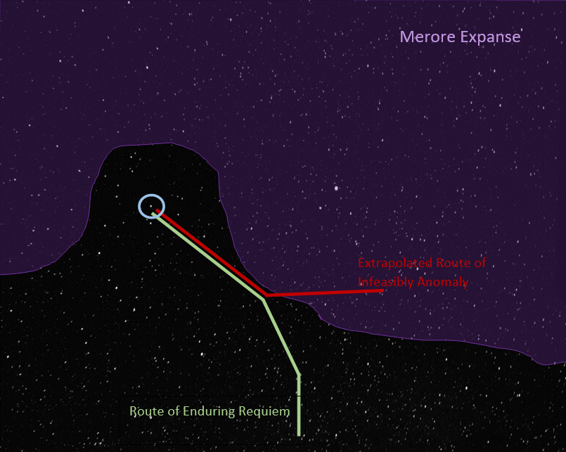
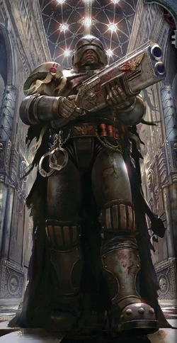

20,000 years ago, in the Dark Age of Technology mankind in its hubris stood at the pinnacle of its scientific achievement.
Man had spread throughout the galaxy and lived decadent, hedonistic, lives of leisure.
They thought themselves unassailable.
But their unhallowed machines; their Men of Stone and Men of Iron, brought them low and rained destruction upon the galaxy.
The tatters of their heretical society were further fragmented and torn by the rise of the warp; stirred up by Xenos heresy.
Only Aeons later was the Emperor’s light able to shine across the galaxy from Holy Terra, unifying humanity once more in His holy embrace.
Oratory of Inquisitor Ordela Thassovyon to Assembled Inquisitors M41
You
You are an inquisitorial acolyte in the retinue of Inquisitor Ordela Thassovyon.
You recently arrived in the Gacromos System aboard the Ecclesiarchy vessel Enduring Requiem.
For the last few weeks you've been pursuing a heretic vessel the Infeasible Anomaly.
In a presumed attempt to spread their heresy more widely the Infeasible Anomaly has been dropping personnel thoughout the sector.
To counteract this, Inquisitor Ordela has ordered teams deployed to the affected systems the Enduring Requiem has passed through.
In this system it's your duty to descend to the planet, root out the heresy and bring the hereteks the swift justice of the Emperor!
Timeline

234.110.M42
Taulk Daedasninich begins a crusade to locate a rumoured Standard Template Construct Database in the Merore Expanse, an area ravaged by warp storms that have recently abated enough to allow warp travel.
116.119.M42
Astropath Jethro Hargel sacrifices himself to pierce the storms surrounding the Merore expanse; warning the imperium of the betrayal of the Heretek Taulk Daedasninich and the crew of the Infeasible Anomaly.
118.119.M42
The closest imperial vessel, the Enduring Requiem, with Ordo Hereticus inquisitor Ordela Thassovyon aboard plots a course to intercept the last known position of the vessel.
119.119.M42 - 133.119.M42
Over the next weeks the Infeasible Anomaly stops at many star systems along the edge of the Merore Expanse, in each case dropping off personnel. The Inquisitor attempts to intercept by dispatching parts of her retinue to each affected world. Despite tricky navigation caused by the warp disturbances at the edge of the expanse, the Enduring Requiem closes the gap between the two vessels from weeks to days.
134.119.M42
The Infeasible Anomaly arrives at the Gacromos system.
134.119.M42
Now in range despite the warp turbulence, the Astropath of the Enduring Requiem telepathically warns Gacromos’s Governor of the approach of the Heretek vessel and by Inquisitorial authority Orders him to shut down all intercity transportation planetwide.
134.119.M42
The Infeasible Anomaly leaves the Gacromos System
137.119.M42
The Enduring Requiem arrives at the Gacromos system.
Umbra Graarn
Your immediate superior in the inquisitorial hierarchy. Umbra Graarn is a Throne Agent who serves in the cadre of the Inquisitor Ordela Thassovyon. Umbra has made planetfall with you and is your commander in the field.
Umbra was selected for this mission because she is native to Gacromos Major.
Gacromos System
It’s proximity to the Merore Expanse, has left the system relatively sheltered from external threats and the relative abundance of its resources has seen it become an important manufacturing hub within the sector.
Due to the interference from the storm wall, astropathic communications with the greater imperium are more difficult than normal. During bad periods communications may stopped entirely for months at a time.
Gacromos Major
The Refounding
After the Age of Strife, Gacromos was resettled during the latter part of the Great Crusade. Detail of the events surrounding the refounding are sparse but it’s clear that the rediscovered planetary population was found unredeemable, Exterminatus was declared, and the planet was Virus Bombed.
From 234.M31 - 264.M31 the planetary biosphere was restored by the Adeptus Mechanicus and the world was resettled.
Addendum by Themanx-Delta-1, Tech-Adept of the Ordo Hereticus Administratum It is likely that the abundance of metals in the asteroid belts both in system and in the neighbouring systems lead to this expenditure of resources.
Addendum by Causs-Larsal, Tech-Adept of the Ordo Hereticus Administratum No doubt the similarity of its surface gravity and rotational period to Holy Terra was also a factor.
The Scourge
From 86.M35 - 94.M35 the planet was embroiled in civil war stemming from the rise of a Khornate Cult. The war and resultant pacification lead to tens of billions of deaths and the destruction of entire hive cities.
The Ruined Rings
Orbiting at 7.644km/s 450km above the planet’s surface is an artificial structure predating imperial records. The structure is fragmented and has been picked clean over the aeons leaving only vacuum ablated solid state substructure. The Mechanicus has deemed the structure is inert and the significant effort required to remove it safely would be a waste of resources.
Addendum by Themanx-Delta-1, Tech-Adept of the Ordo Hereticus Administratum Although the artist has seen fit to furnish the ring with tendrils appearing to touch down on the planet’s surface I have corresponded with the local Mechanicus office and can confirm that this is merely an affectation. I have also confirmed that the structure doesn’t have a centre of mass above geostationary orbit; It was never an elevator.
Addendum by Causs-Larsal, Tech-Adept of the Ordo Hereticus Administratum Did your enquiries uncover what material this structure is made from? We should include this if we have it.
Addendum by Themanx-Delta-1, Tech-Adept of the Ordo Hereticus Administratum I requested the whole report including what lead them to conclude that the structure is inert. They seem to be having trouble locating it.
Addendum by Causs-Larsal, Tech-Adept of the Ordo Hereticus Administratum Typical of a Hive Office to have a lax attitude to record keeping.
Surface Conditions
The atmosphere is thinner than that of Holy Terra and Millennia of heavy industry have degrade the biosphere and filled the atmosphere with pollutants.
An unaugmented human is unlikely to be able to survive for long unprotected outside of the city
Omnicar Hive City
A hive city or simply a hive, is a massive arcology, or fully self-contained city, that is home to millions or even billions of Human beings loyal to the Imperium of Man. Hive cities are often found in clusters on the densely populated urban planets known in the official Imperial lexicon as Hive Worlds.
Hive cities have been built up over thousands of Terran years, in many cases stretching back into the Age of Technology long before the founding of the Imperium.
Hive cities are layered constructions of rockcrete and adamantium, comprising thousands of residential and industrial blocks leveraged one atop the other, forming a massive, man-made mountain usually capped by a crown of great spires that stretch thousands of metres into the sky.
Omnicar was founded in 256.M35. After nearly 7 millenia it stands 100km high with a base 30km across. Omnicar is one of the larger cities on Gacromos and is home to the imperial family of the planetary govenor. It had a declared population of 16,126,842,288 with a population density of 985,600 per cubic kilometer at the last imperial census in 981.M41.
Addendum by Themanx-Delta-1, Tech-Adept of the Ordo Hereticus Administratum Unihabitable Ruins!? Do they think our cogitator implants are malfunctioning?
Addendum by Causs-Larsal, Tech-Adept of the Ordo Hereticus Administratum Indeed brother, it does seem to be an obvious untruth.
The Spine
A kilometer diameter cyclindrical conduit that runs from ground level to the upper spire. It's used to rapidly convey material, goods and passengers up and down the spire.
The spine was the only part of the original hive city remaining after the orbital bombardment that heralded the end of The Scourge.
Addendum by Causs-Larsal, Tech-Adept of the Ordo Hereticus Administratum From reading the account of The Scourge it seems that this world was fortunatunate to avoid a second Exterminatus.
Omnicar Society
Noble Houses
Highborn exist on nearly all worlds in the Imperium, from the towering spires of its hive cities to the stone forts and caves of its feral kingdoms. They are the privileged and powerful of their worlds; those fit for governance not by the will of the people but by the providence of their birthright.
While their powers and purview might differ from world to world, their function remains the same: to lead their people and control the resources and political might of their planet. Most Highborn grow up being groomed for this power, taught to govern justly by fair and even-handed peers or, more likely, instilled with a disregard for those below and ingratitude for the influence and position they have been given.
Here they are content to shield themselves in the trappings of wealth and privilege, while focusing on the real threat to their existence or to that of their family: other Highborn.
Guilds
Huge families granted, by imperial charter, a monopoly over a particular aspect of commerce or enterprise. The conditions in which a guilder lives and the power the family wields depends on the charter they have with the more potent guilds rivaling minor noble houses in power.
Rates the guild can charge are set by the governor.
Imperial Citizens
The vast majority of the billions of people inhabiting Omnicar toil in the refineries or manufactories. They work long hours and live in cramped conditions. Most never leave their part of the hive structure. They are kept in line by the preaching of the Adeptus Ministorum and the boot of the Adeptus Arbites.
Dregs
Those outside of imperial society. Mutants, cultists and criminal scum. Typically the broken warrens below the surface level of a hive city crawl with this type of villany. Some are just trying to live. Some would try to eat you.
Imperial Government
Adeptus Arbites
The Adeptus Arbites is the adepta of the Adeptus Terra that serves as the galactic police force of the Imperium of Man, responsible for enforcing Imperial Law (the Lex Imperialis) on all Imperial-controlled worlds. The Adeptus Arbites have been granted the right by the High Lords of Terra to serve as judge, jury and executioner for any Imperial citizen they discover having broken Imperial Law. Unfortunately for many Imperial citizens, the concept of due process is not one that generally applies in the Imperium.
However, in those cases where Imperial Law is unclear or the law breaker has committed a truly heinous deed or is of unusually high-ranking stature, the offended will be taken back to an Arbites Precinct House for judgement by an Arbites Judge, the sentence to be carried out immediately. Imperial justice is swift and sure, but not always just.

Adeptus Administratum
The Adeptus Administratum, often referred to simply as the Administratum, is the administrative and bureaucratic division of the Adeptus Terra, the heart of the gigantic bureaucracy that controls the government of the Imperium of Man, consisting of untold billions of clerks, scribes and administrative staff constantly working to manage the Imperium at every level, from assembling war fleets to levying taxes.
Adeptus Ministorum
The Adeptus Ministorum, more commonly known as the Ecclesiarchy, is the official state church of the Imperium of Man, which maintains and promotes the worship of the Emperor of Mankind as the one, true God of Humanity.
Adeptus Astra Telepathica
The Adeptus Astra Telepathica is an adepta of the Adeptus Terra responsible for the recruitment and training of sanctioned psykers in the service of the Imperium of Man.
Adeptus Mechanicus
The Adeptus Mechanicus is the official Imperial name within the Adeptus Terra for the Cult Mechanicus or Cult of the Machine based on Mars which provides the Imperium with its scientists, engineers and technicians.
The tech-adepts of the Mechanicus are the primary keepers of what is viewed as sacred wisdom, a privileged caste of Tech-priests who jealously guard the knowledge required to maintain and construct much of the Imperium's advanced technology.
Notable Noble Houses
Imperial House Octus
The house of the planetary governor and the governor of Omnicar. The upper spire of Omnicar is soley inhabited by the imperial family.
House Soddenmere
A main rival of house Graarn.
House Graarn
The house of Umbra Graarn.
Notable Guilds
The Esteemed Society of Conveyors
Monopoly over shuttle services, transportation and hauling within the system.
Mercator Sanguis
Traders in slaves and indebtured servants system wide.
Omnicar Manufacturers Association
Manufactorum owners and administrators.
Efluvia Removal Network
Sewerage infrastructure.
Omincar Guild of Vox Operators
Monopoly over operation and ownership of vox transmission equipment.
Vita Industria Coetus
Monopoly over power generation and infrastructure
Donum Aquae
Water storage and distribution.
Pecunia Custodiebantur
Banking services
Glossary
Age of Strife
The Age of Strife, also sometimes referred to as "Old Night" based on the name for the era on Terra in older Imperial histories, is the name for the apocalyptic and highly fragmented period of Human history that began roughly in the 25th Millennium A.D. and ended in the 30th Millennium with the birth of the Imperium of Man. It was in this time that the great Human interstellar civilisation created during the golden age of the Age of Technology collapsed into isolation, constant warfare, disease, rampant mutation, famine and a host of other terrible tragedies. These events killed tens of trillions of people and pushed Humanity to the brink of extinction.
Adeptus Ministorum
See Ecclesiarchy
Adepta Sororitas
The Adepta Sororitas, colloquially called the "Sisterhood," whose military arm is also known as the Sisters of Battle and formerly as the Daughters of the Emperor, are an all female division of the Imperium of Man's state church known as the Ecclesiarchy or, more formally, as the Adeptus Ministorum. The Sisterhood's Orders Militant serve as the Ecclesiarchy's armed forces, mercilessly rooting out spiritual corruption and heresy within Humanity and every organisation of the Adeptus Terra. There is naturally some overlap between the duties of the Sisterhood and the Imperial Inquisition; for this reason, although the Inquisition and the Sisterhood remain entirely separate organisations, the Orders Militant of the Adepta Sororitas also act as the Chamber Militant of the Inquisition's Ordo Hereticus.
Immaterium
See Warp
Warp
An alternate spacetime in which the chaos gods reside, from which pyskers draw their power. Direct exposure to the warp causes corruption and\or death in unprotected individuals. All FTL communications and travel rely on the warp. Referred to as the Immaterium by those of a learned nature.
Emperor
An immortal man, born at least before 5000 BC who has shepherded mankind for the last 40k years. A powerful psyker, his wounded body is now interred on Terra. From his damaged soul shines forth the astronomicon.
Astronomican
From the damaged soul of the emperor shines forth the astronomican. This beacon allows for more reliable navigation in the warp and is maintained by the sacrifice of 1000 psykers a day.
Xenos
Non-humans. All non-humans are full of heresy. Your duty as an imperial citizen is to cleanse them with the purifying fire of the emperor.
Ecclesiarchy
The Ecclesiarchy (officially the Adeptus Ministorum) is the official state church of the Imperium. It maintains and spreads the Imperial Cult throughout the Imperium. Although the interpretation of particular Imperial Cult dogmas varies through the Imperium, any serious deviance from its strictures is considered heresy and dealt with extreme severity.
Ordo Hereticus
The Ordo Hereticus is one of the three major orders of the secretive organisation known as the Imperial Inquisition. They are tasked with protecting Mankind from itself, by combatting such internal threats to the Imperium as treason, mutation, heresy, apostate members of the Ecclesiarchy and unsanctioned psykers, colloquially known as "witches" across much of the Imperium.
Adeptus Mechanicus
The Adeptus Mechanicus is the official Imperial name within the Adeptus Terra for the Cult Mechanicus or Cult of the Machine based on Mars which provides the Imperium with its scientists, engineers and technicians. The tech-adepts of the Mechanicus are the primary keepers of what is viewed as sacred wisdom, a privileged caste of Tech-priests who jealously guard the knowledge required to maintain and construct much of the Imperium's advanced technology.
Virus Bomb
A Virus Bomb is a potent Imperial biological weapon and weapon of mass destruction, commonly used to carry out Exterminatus actions during the Great Crusade and Horus Heresy periods of the late 30th and early 31st Millennia. The pathogen can penetrate even sealed environment suits, including power armour. It rapidly converts living tissue and plant matter into flammable gases which react with the planet’s atmosphere to create a global firestorm.
Men of Stone
The Men of Stone were a class of artificially created beings created during the Dark Age of Technology in roughly M21. Powerful sentient machines.
Men of Iron
During the Dark Age of Technology, the Men of Iron were created by the Men of Stone to aid them in colonizing the Galaxy. Powerful sentient machines.
Standard Template Construct
The Standard Template Construct (STC) systems were complex analytical and processing programs, artificial intelligences, created during the Dark Age of Technology (M21 - M23). They are said to have contained the entirety of human technological knowledge up to that point. Following the Age of Technology, the systems became increasingly rare, until becoming lost entirely. In the current Age of the Imperium, the ancient technological knowledge survives only because it was preserved in STC hard copies.
Inquisitor
An Inquisitor is a clandestine agent and one of the highest-ranking members of the Imperial Inquisition. Inquisitors are the secret policemen and intelligence agents of the Imperium.
Throne Agent
Throne Agents form the retinue (also known as a cadre) of an Inquisitor, and sometimes eventually become Inquisitors themselves. Throne Agents possess many resources that Acolytes do not, ranging from the nearly limitless authority of the Inquisitorial Rosette to the blend of sophisticated technology and lethal skills of the Vindicare Assassin. For most Throne Agents, it is not enough to simply uncover a conspiracy or locate the core of a heretical cult. Instead, Throne Agents are often solely responsible for completely rooting out the conspiracy, or are charged with the utter and complete destruction of every cult cell within a star system.
Inquisitorial Rosette
An Inquisitorial Rosette is a symbolic icon of the members of the Inquisition. This is a small amulet or icon in the shape of a stylised column. This powerful symbol is recognised throughout Imperial society, for those who bear it wield ultimate authority, and they do so in the name of the Emperor. Rosettes are often inscribed with verification technology and coded encryption in order to communicate the bearer's authority to any cogitator, confirming the bearer's clearance as well as preventing forgeries. The rosette, however, is used very sparingly, as most Inquisitors prefer to keep themselves and their Acolytes inconspicuous. The rosette is most commonly used when in the company of fellow members of the Inquisition or when an Inquisitor wishes to strike fear and awe into the common man.
Inquisitorial Acolyte
Inquisitors will form their own cadre of agents of various roles and functions in order to achieve whatever goal is put before them. Acolytes are initiates into the Inquisition's service. They can be drawn from every facet of imperial society. Some may be used briefly for special tasks or one-shot missions while others may serve alongside the Inquisitor for the duration of their career.
Imperium
The Imperium of Man, also called simply the Imperium, is a galaxy-spanning, interstellar Human empire, the ultimate authority for the majority of the Human species in the Milky Way Galaxy in the 41st Millennium A.D. It is ruled by the living god who is known as the Emperor of Mankind.
Adeptus Terra
The Adeptus Terra, also known as the "Priesthood of Earth," is the central bureaucratic governmental organisation of the Imperium of Man and not really an agency in and of itself. It is made up of many autonomous departments that receive the orders of the High Lords of Terra, passing them down to the different branches that will enact their commands.
Ordela Thassovyon
An inqusitor of the Ordo Hereticus and your ultimate superior. Ordela is currently aboard the Enduring Requiem persuing the Infeasible Anomaly.
Tech-Priest
A Tech-priest, also spelled Tech-Priest or even tech-priest, is an adept of the Adeptus Mechanicus of the Imperium of Man who is generally responsible for maintaining all of the advanced technology of the Imperium, enlarging the Imperium's stocks of technical knowledge and conducting what little new scientific research occurs within the Imperium since the end of the Horus Heresy.
Tech-priests are members of the Cult Mechanicus, the Cult of the Machine, a priesthood which forms an ecclesiastical hierarchy of technicians, scientists, and religious leaders who believe that knowledge represents the only true divinity in the universe.
Tech-Adept
See Tech-priest.
High Lords of Terra
The High Lords of Terra, also called the "High Twelve," collectively form the Council of the High Lords of Terra, also known as the Senatorum Imperialis.
The Senatorum is an Imperial governing body comprised of the twelve highest-ranked officials of the most powerful adepta of the Imperium of Man. During much of Imperial history they have ruled the Imperium as a collective oligarchy in the name of the Emperor.
This body carries out the day-to-day decisions required to govern the Imperium according to what they believe to be the divine will of the Emperor of Mankind. The primary task of the High Lords is thus to interpret and enact the will of the Emperor. Accordingly, the rank of High Lord is among the most politically powerful in the Imperium.
Planetary Governor
The political leader of a world of the Imperium of Man is known as a planetary governor or sometimes as an Imperial governor, and is considered an Imperial Commander in military matters. Regardless of his or her specific title, a planetary governor is an individual with the (often hereditary) authority to rule a world or even an entire star system in the name of the Emperor of Mankind.
Enduring Requiem
The Ecclesiarchy vessel on which you arrived into the Gacromos System.
Infeasible Anomaly
An adeptus mechanicus vessel under the command of Taulk Daedasninich that appears to have gone rogue.
Taulk Daedasninich
A Tech-priest who while searching for a Standard Template Construct in the Merore Expanse appears to have betrayed the Imperium. He is believed to be aboard the Adeptus Mechanicus vessel the Infeasible Anomaly.
Merore Expanse
An area ravaged by warp storms. Warp travel in this area has been considered impossible for most of imperial history. Recent abatements in the severity of the storm wall have allowed limited exploration in recent decades.
The Scourge
From 86.M35 - 94.M36 the planet was embroiled in civil war stemming from the rise of a Khornate Cult. The war and resultant pacification lead to tens of billions of deaths and the destruction of entire hive cities.
Khornate Cult
Khorne, also called the "Blood God," the "Lord of Skulls," and "Kharneth" among many other titles, is the Chaos God of war, hatred, rage, wrath, blood, martial honour, strength and murder. Its portfolio of interest covers the most basic and brutal of sentient emotions and actions, such as hate, anger, rage, the desire for destruction and the joy of killing one's enemies.
Chaos God
The Chaos Gods, also called the Dark Gods or the Ruinous Powers, are powerful, self-aware entities comprised solely of psychic energy who inhabit and control the psychic dimension that underlies all physical reality known as the Immaterium or the "Warp."
Lex Imperialis
The Lex Imperialis, known also as the Dictates Imperialis or simply "Imperial Law" in Low Gothic, is the legal code of the Imperium of Man which consists of a vast body of laws and codes that have been compiled over ten Terran millennia.
Sanctioned
A Sanctioned Psyker is a Human psyker who plays an ordained role as a servant of the Imperium of Man, for they have the rare willpower to control their abilities and not become a danger to others. A Sanctioned Psyker's exact role in Imperial society depends on the psychic powers they manifest and the strength of their character and will.
Such psykers are soul-bound to the Emperor, a psychic ritual that hardens their minds and souls against possession by the daemonic entities of the Warp. Most psykers are recruited by the black ships.
Psyker
All psykers draw their powers from the extradimensional realm known as the Immaterium or the Warp that underlies four-dimensional realspace and is the source of all psychic energy in the universe.
As such, psykers, particularly Human psykers whose minds are far less disciplined and easily tempted than their Aeldari counterparts, are often in danger of possession by the daemonic entities of the Warp, insanity and ultimate corruption by the Ruinous Powers of Chaos. See Sanctioned Psyker.
Black Ships
The black ships visit planets of the Imperium to strip them of their psykers for transportation to Terra, where they will be either trained to become Sanctioned Psykers who can serve the Imperium in a number of important roles or their lives will be sacrificed to the Emperor of Mankind so that He will have the psychic energy necessary to maintain the crucial telepathic navigational beacon of the Astronomican.